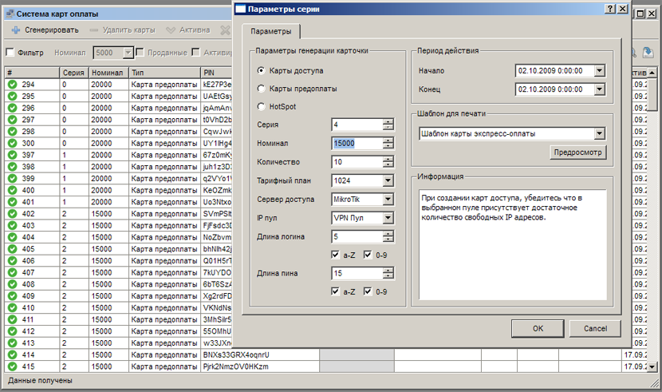
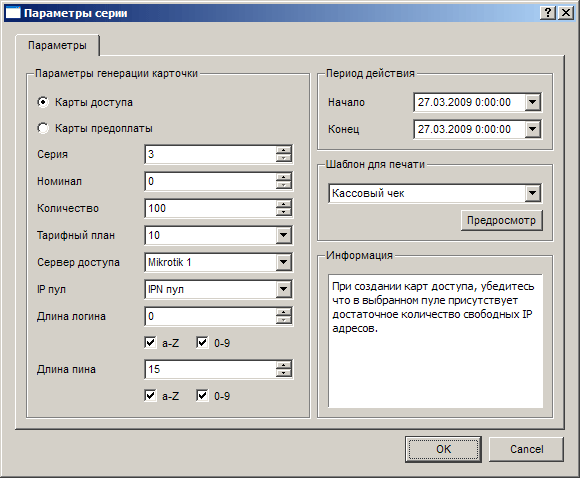
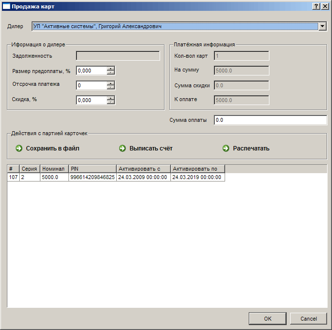

|
Интерфейс и логика |
Top Previous Next |
|
Открыть раздел «Карты экспресс-оплаты» можно одним из следующих способов:
– кнопкой на панели; – через меню «Главное меню» → «Карты экспресс-оплаты»;

Главное окно раздела составляют панель инструментов с кнопками «Сгенерировать», «Удалить партию», «Активна», «Неактивна» и «Продать», панели инструментов со средствами фильтрации карт в таблице и непосредственно таблицы карт.
Инструменты фильтрации (флажок «Фильтр» и кнопка «Фильтровать») используются для выделения в таблице карт, соответствующих определенным требованиям. Возможна фильтрация по номиналу (выпадающий список «Номинал»), отсев проданных карт (флажок «Проданные») и подбор карт по времени активации (флажок «Активированные», поля «С» и «По»).
Окно «Параметры серии»
Окно «Параметры серии» открывается при нажатии на кнопку «Сгенерировать». В нем устанавливается тип генерируемых карт, номер серии («Серия», автоматически увеличивается на 1 при каждом выпуске, влияет на номер карточки), номинал карты («Номинал»), число создаваемых карт в серии («Количество»), тарифный план(для карт доступа и HotSpot карт), сервер доступа(для карт доступа и HotSpot карт), длину и состав логина(для карт доступа и HotSpot карт), длину PIN-кода («Длина пина», до 32 символов) и его составляющие (флажки «Буквы a-Z», «Цифры 0-9» – рекомендуется использовать PIN-коды, содержащие как буквы, так и цифры), период действия карт, используемый для печати шаблон.

Если выбран тип «Карты доступа», то становятся доступными выпадающие списки для выбора тарифного плана («Тарифный план»), сервера доступа («Сервер доступа»), IP-пула («IP пул»), а также длины логина («Длина логина», до 32 символов) и его составляющих (флажки «Буквы a-Z», «Цифры 0-9»)
Обратите особое внимание: при создании карт доступа вам потребуется указать IP пул из которого абонентам будут назначаться IP адреса. По типу IP пула (Главное меню->IP пулы) IPN/VPN система будет ориентироваться при указании IP адреса для создаваемого абонента. Если вы выберете PPTP тарифный план и ошибочно укажете IPN пул, то при активации карты система создаст абонента и пропишет ему в поле "Сетевой IP адрес"(Вместо VPN IP адрес) один из адресов пула. Соответственно такой абонент не сможет авторизоваться на сервере доступа.
Обратите особое внимание: при первой активации HotSpot карты доступа в системе, на указанном в параметрах карты доступа тарифном плане, будет создан абонент с VPN IP адресом, назначенным им HotSpot сервером. При повторной активации абонента на сервере доступа IP адрес в профиле абонента будет аналогичным образом установлен.
Обратите внимание: при генерации карт доступа система резервирует IP адреса из пула. Такие адреса уже не могут и не должны быть использованы при генерации другой серии карт или назначены абонентам.
Обратите внимание: при создании карт доступа вам необходимо убедиться, что в выбранном пуле свободных адресов не менее, чем число генерируемых карточек.
Обратите внимание: для избежания дублирования логинов для карт доступа и HotSpot карт, система автоматически добавляет к каждому логину приставку "серия-".
Обратите внимание: не активированные карты из числа проданных в таком случае не смогут быть активированы.
«Активна» – изменяет статус карты на активный, т.е. карта может быть активирована.
«Неактивна» – изменяет статус карты на неактивный, т.е. карта не может быть активирована(даже если была продана).
Активация карт доступа происходит в веб-кабинете на странице входа. После активации карты абонент может попасть в свой веб-кабинет. Активация HotSpot карт происходит на странице HotSpot сервера доступа.
Окно «Продажа карт»
Кнопка «Продать» вызывает окно «Продажа карт».

В нем выбирается дилер, которому будут продаваться карты («Дилер») и параметры, относящиеся к оплате за партию. Для данного дилера приводится сумма задолженности («Задолженность»), устанавливаются объем предоплаты («Размер предоплаты, %»), количество дней отсрочки платежа («Отсрочка платежа») и процент скидки («Скидка, %»). При этом в блоке «Платежная информация» автоматически высчитывается сумма к оплате («К оплате») на основании количества карт («Кол-вол карт»), их номинальной стоимости («На сумму») и скидки («Сумма скидки», автоматически заполняется если значение в поле «Скидка, %» не равно нулю).
Отчет по продаваемой партии можно сохранить в XML-файл (кнопка «Сохранить в файл»), оформить в виде счета («Выписать счет» Главное меню->Шаблоны->накладная на карты экспресс-оплаты). Также можно распечатать карты в соответствии с указанным для каждой из карт шаблоном. This help file was created with an unregistered evaluation copy of Help & Manual. © EC Software. All rights reserved. This message will not appear if you compile this help file with the registered version of Help & Manual. |